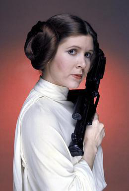

Luke Skywalker wearing his Tattooine farmboy robe. The blue
lightsaber he is currently wielding once belonged to the reknowned jedi knight Anakin Skywalker.

Princess Leia wearing the dress that the empire captured her in on
the Tantive IV. She has just sent out her distress message a few minutes ago.

Han Solo wearing the outfit that he meets Luke Skywalker and Obi-Wan Ben Kenobi in.
When trying to flee Tattoine, a gunfight ensues between Solo's party and the Empire. They manage to escape on
the Millenium Falcon and head to save the captured princess.
1.) Luke Skywalker was just a teenage farmboy boy until Obi-Wan Ben Kenobi
revealed to him that his father was a jedi knight. Luke had always
wanted to be a pilot and travel the cosmos. From the moment he found out about his father, Luke made it his mission to fulfill his dreams. On his first adventure
he had to rescue a captured princess, who turned out later to be his long lost sister. Along the way he met the scoundrel, Han Solo and his partner Chewbacca. Three would
soon become great friends and allies. After rescuing the princess, Luke successfully blew up the Death Star during the Battle of Yavin IV. From the time Luke destroyed the Death Star
to his encounter with Darth Vader in Cloud City, he participated in the Battle of Hoth and started training under Grandmaster Yoda. During his confrontation with Darth Vader in Cloud City, he
discovered that his father was actually Darth Vader. Not wanting to become like his father, Luke defeated him during the Battle of Endor and in the process also "killing" Emperor Palpatine,
which ended the reign of the Empire.
2.) Princess Leia, the adopted daughter of Senator Bail Organa, was a princess on the planet of Alderan, before it was
blown up by the Death Star(which also resulted in the death of her adoptive parents). She was a high ranking member
of the rebel alliance and would rather die than let any more unjust actions committed by the empire move forward. She is
soon captured by the empire and sends a distress signal out to Obi-Wan Ben Kenobi. This signal is received but Kenobi is
also accompanied by a young Luke SKywalker, who would soon turn out to be her brother and Han Solo, a scoundrel and her future lover.
Leia has been involved in the Battle of Yavin IV, Battle of Hoth, and the Battle of Endor.
3.) Han Solo, a smuggler and the owner of the Millenium Falcon, is always accompanied by his wookie friend Chewbacca. There isn't a single mission they
haven't been together on since meeting each other. Han Solo was not on the right side of the galaxy early on. He smuggled spices, weapons, other
illegal galactic items across the galaxy. He frequently worked for organizations such as the Hutt Clan, but he messed up on a spice run and owed money
to Jabba. Because of this Jabba sent numerous bounty hunters to bring Solo to his palace alive so that he could frame him. Han was eventually caught and
frozen in carbonite, but not before confessing his love for Princess Leia. Han has been involved in missions such as the Battle of Yavin IV, Battle of Hoth, and Battle of Endor.
After joining the Rebel Alliance, he achieved the rank of captain and squadron leader for his flying skills. Han is good friends with Luke Skywalker and treats him as a brother.